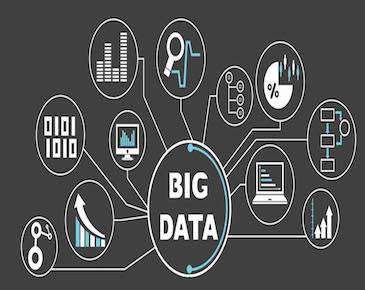

Technologies
Tous ce que vous trouverez ici, fais partie du principal


Prénom: Koffi Innocent
Nom: Konan
Localisation: Vridi, Port-Bouët, Abidjan
Profession: Développeur
Tous ce que vous trouverez ici, fais partie du principal